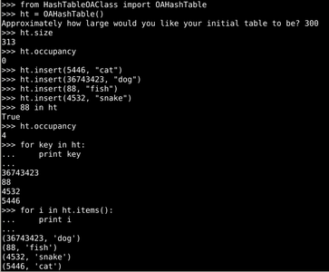

Solving problems in Portland, Oregon
For this project, I used vanilla JavaScript and hand-coded HTML/CSS to create a simple responsive website which functions like a dichotomous tree for mushrooms. Click through the various types to see what edibles are in the Portland area!
I wrote my own mapping, "dictionary", or hash-table in Python. It uses open-addressing to resolve hash collisions (I've also implemented a chaining version, but this one is cleaner). Has all of the basic features you'd expect. Nerdy details include: I overload the "in" operator by using the __contains__ method in my class, and implemented looping over keys, values, or items by using generators and the built-in yield statement. Table automatically resizes up at 70% occupancy to a 2x or larger prime value (for fewer hash collisions).
I implemented some basic sorting algorithms in Python 2.7 in order to get a feel for both
the algorithms and their Big-O timing. The linear sorts (Bubble, Selection, Insertion) were
all surprisingly easy to implement, yet are generally too inefficient to use. Shell's
diminishing increment insertion sort at first appears like a simple hack on the insertion
sort, yet it took far more work to understand the mechanism itself than to actually implement
it (moving by a gap and reducing the gap to zero has a very elegant simplicity to it).
The two recursive sorts (Merge & Quick) were surprising in how different divide-then-conquer
is from conquer-then-divide. My QuickSort My implementation has a single median-of-three in
picking pivots to try and avoid the worst of the inefficient-pivot behavior, but lacks many
of the other clever improvements which have been developed over the years.